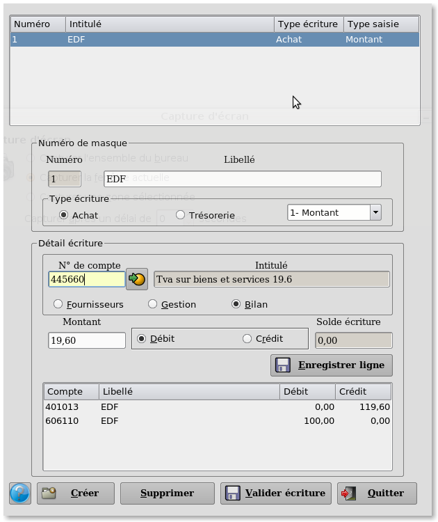

~ Comptabilité et Facturation Laurux ~

~ Comptabilité et Facturation Laurux ~ |
|
|
|

Ce programme va être utilisé pour créer, modifier ou supprimer les masques de saisies.
Un masque de saisie est une écriture complête qu'on saisit régulièrement. Par exemple une écriture d'abonnement, un prélèvemment mensuel etc ...
Pour créer un masque on clique sur le bouton "Créer" et un numéro va être automatiquement attribué.
On donne un libellé explicite à notre masque.
On
determine le type de masque en sélectionnant le bouton "Achat" ou
"Trésorerie" puis on saisit l'écriture complête dans la zone "Détail
écriture"
Durant
la saisie de l'écriture, aucun contrôle n'est
effectué, hormis sur le solde qui doit être égal à zéro lors de
l'enregistrement d'une écriture d'achat. Dans le cas d'une saisie
d'écriture de trésorerie, on ne pourra pas appeler de compte de
trésorerie puisque dans une écriture de trésorerie la contrepartie est
automatique. Dans ce cas il n'y a pas de contrôle sur le solde.
Cependant le sens débit crédit est automatiquement proposé par Laurux et le solde s'affiche à chaque validation de ligne.
Pour
saisir une ligne, on sélectionne le type de compte puis on saisit le
compte souhaité et le montant . On verifie que le sens proposé soit
correct avant de valider la ligne saisie.
Lorsque l'écriture est terminée on peut l' enregistrer en cliquant sur le bouton "Valider ecriture".
Attention, la tva ne se calcule pas automatiquement. Chaque ligne doit être saisie manuellement.
----------------------------------------------------------------------------------------------------------------------